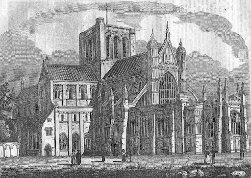
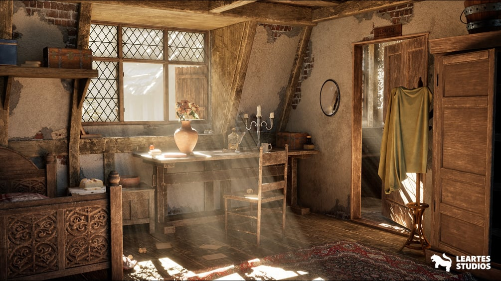

The three articles this week have made me realize one thing which is when we use VR to recreate a historical site, we are not just “constructing space,” but also participating in a “politics of memory.” This has made me reexamine the original intention and approach of my work on Winchester Cathedral.

Callow, S. (2013). The Real Jane Austen: A Life in Small Things by Paula Byrne – review [Online image]. Available at: https://www.theguardian.com/books/2013/feb/08/the-real-jane-austen-review (Accessed: 1 May 2025)
Nora’s concept of “sites of memory” deeply resonated with me. He stated that memory is not preserved within archives or museums, but rather exists in the interaction between “sites” and people. Winchester Cathedral is a classic example of a “site of memory” because it bears the weight of multiple histories related to religion, politics, architecture, death, and even war. However, I now understand that this “memory” doesn’t speak for itself, it requires someone to “awaken” it. This has led me to reflect on whether I could design a certain mechanism that enables users not just to “visit the past,” but to “interact with the past.” For instance, users could touch the name on Jane Austen’s tombstone and then hear snippets of whispers about her life story, or the scene could briefly transform into the style of that era.

Speel, B. (n.d.). Winchester Cathedral [Online image]. Available at: http://www.speel.me.uk/sculptplaces/winchestercath.htm (Accessed: 1 May 2025)
The idea of “digital curation” proposed by Cameron and Kenderdine has also inspired me. I had always thought that my task was to model the church as accurately as possible. But they reminded me that digital reconstruction itself is a form of narration and a selective act. Then, can I deliberately emphasize a certain memory? For example, can I create an experience of the church during the “queen’s coronation” and also a version depicting the church’s damage during World War II? Although both of these reconstructions are “real,” they tell different histories and evoke different emotions. Through digital media, I actually possess the ability to tell “multiple versions of memory.”

Oliveira, V. (n.d.). Traces of Time Environment (Unreal Engine) [Online image]. Available at: https://leartesstudios.gumroad.com/l/traces-of-time-ue (Accessed: 1 May 2025)
Huyssen’s view of “the weightlessness of media memory” has also triggered some of my concerns. He said that in modern society, it is too easy to “handle the past with technology,” and as a result, people lack empathy for the weight, pain, or complexity of history. This makes me reflect that when I was doing the 3D modeling of the church, was it too “clean”? Do I need to add some “traces of time”? For example, stains on the walls, broken glass, and tiny dust particles, although these elements are small, they may give users a more realistic sense of “being in history.” Even, I could add some “uncontrollable” elements. For instance, the angle at which natural light enters the church changes slightly each time, allowing people to feel that “fluidity of time.”
Most importantly, I’ve realized that digital reconstruction is not a cold copy, but a “recreation of memories” filled with emotional warmth. I’m not just moving the church’s past into the computer, instead, I’m inviting the audience to jointly experience its significance anew. For me, this is where the true value of this project lies.
Reading list
- Pierre Nora – “Between Memory and History: Les Lieux de Mémoire” (1989)
- Cameron, Fiona and Kenderdine, Sarah (2007). Theorizing Digital Cultural Heritage, Introduction
- Huyssen, Andreas (2000). “Present Pasts: Media, Politics, Amnesia” in Public Culture, 12(1)